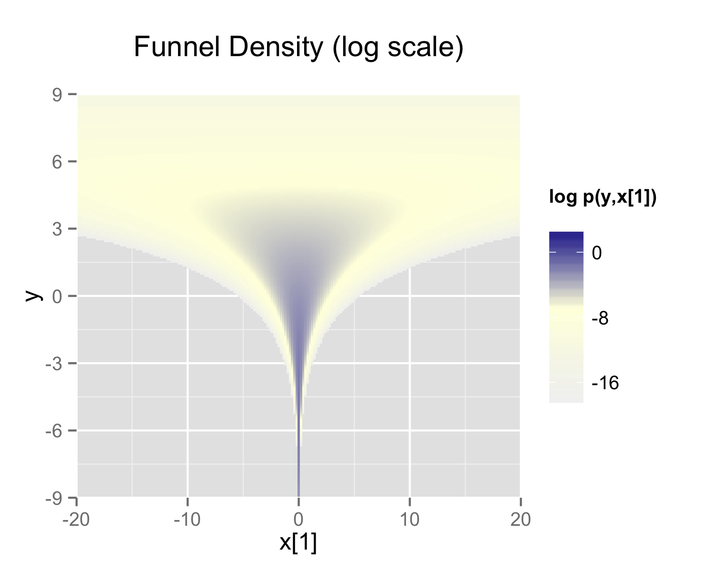

Optimizing Stan models
Through reparameterization and by changing Stan’s sampling values
Model code and R scripts for this workshop are located in the (/workshops/07.optm_rl) directory.
Running the hierarchical model will generate the posterior density plots below:
Individual-subject posterior density plots for learning rate (left) and inverse temperature (right)
Remember that these analyses are ran on simulated data generated from a set of learning rates and inverse temperatures. In other words, we know the ground truth for these parameter values. We can therefore compare the results from both the individually fitting model and the hierarchical model to the ground truth:

Violin plots for the posterior means generated from the group-model fitted at the individual-subject level, the hierarchical model, and the true parameters
The analyses which were ran above should generate the latter two; the individual-subject plot is taken from an earlier workshop.
Note that the variance is reduced for both parameters when comparing the individually fitted results to the hierarchical structure. However, this variance is lower than the observed variance in the ground-truth results. This is because the code running the hierarchical model is not optimized.
For example, when running the hierarchical model, immediately after after the sampling has completed, you should see the following message in the R console:
Warning messages:
1: There were 87 divergent transitions after warmup. See
https://mc-stan.org/misc/warnings.html#divergent-transitions-after-warmup
to find out why this is a problem and how to eliminate them.
2: There were 1 chains where the estimated Bayesian Fraction of Missing Information was low. See
https://mc-stan.org/misc/warnings.html#bfmi-low
3: Examine the pairs() plot to diagnose sampling problemsThis reflects the issues we highlighted earlier with putting bounds on the normal distribution; the sampler is trying to go beyond a closed door.
Optimization in Stan
More generally, this reflects the practice of optimizing your modeling framework. This can be done in four main ways: pre-processing, specification, vectorization, and re-parameterization. The first two should be implemented outside of Stan, whilst the second two specifically involve optimizing your Stan code.
Four key strategies to optimize Stan models
Pre-processing
Stan is a programming language for model estimation. It does not perform the pre-processing; which should be done outside Stan where possible.
To demonstrate this, let’s look at a concrete example involving a quadratic regression:
\[height = \alpha + \beta_1 * weight + \beta_2 * weight^2\]
We can either calculate the squared term in R before passing to Stan:
d$weight_sq <- d$weight^2Or calculate the squared term inside Stan directly:
transformed data {
vector[N] weight_sq;
for (i in 1:N) {
weight_sq[i] = weight[i]^2;
}
}While the latter would give the same results, it’s less efficient and makes the Stan code more complex than necessary. Ultimately, you should save Stan for the actual statistical modeling, and do as much data preparation as possible in your primary programming environment.
Model specification
The goal of computational modeling is to uncover latent cognitive processes underlying our observed data. However, this goal can only be achieved if we specify a model that adequately captures the underlying processes that generated our data in the first place. A model that inherently fails to capture important aspects of these processes will lead to poor inferences and unreliable conclusions, no matter how sophisticated our statistical methods may be.
Model mis-specification occurs when our statistical model fails to capture important aspects of the data generating process. For example, let’s say one is studying the relationship between study time and test scores.
We might assume this relationship is linear and write:
\[score = \beta_0 + \beta_1 * study_time + \epsilon\]
However, in reality, the relationship might be non-linear - perhaps there are diminishing returns where studying beyond a certain point yields smaller improvements in scores. If we force a linear model on this non-linear relationship, our model is misspecified and could lead to poor predictions and incorrect inferences.
There are four main guidelines for proper model specification:
1. Visualize your data: Plot your raw data before building any models, looking for patterns, relationships, and potential outliers
2. Follow the literature: Build on existing theoretical frameworks in your field and review similar studies to understand common modeling approaches
3. Start simple and build complexity: As we have done in this course, begin with the simplest reasonable model that could explain your data, and add complexity only when justified by theory or data. Subsequently test whether added complexity improves model fit thorugh model comparison
4. Simulate data and run model recovery: Test your model by generating simulated data, and check if it can recover the true parameters used to generate the data
Vectorization
As mentioned in earlier workshops, Stan will automatically perform operations on entire vectors/arrays at once through vectorization. We have already seen some examples:
- Bernoulli model
// Non-vectorized version
model {
for (n in 1:N) {
flip[n] ~ bernoulli(theta);
}
}
// Vectorized version
model {
flip ~ bernoulli(theta);
}- Linear regression model
// Non-vectorized version
model {
vector[N] mu;
for (i in 1:N) {
mu[i] = alpha + beta * weight[i];
height[i] ~ normal(mu[i], sigma);
}
}
// Partially vectorized version
model {
vector[N] mu;
mu = alpha + beta * weight;
height ~ normal(mu, sigma);
}
// Fully vectorized version
model {
height ~ normal(alpha + beta * weight, sigma);
}- Hierarchical Rescorla-Wagner model
Where we use:
model {
lr ~ normal(lr_mu, lr_sd); // Vectorized normal distribution for learning rates
tau ~ normal(tau_mu, tau_sd); // Vectorized normal distribution for tau parameters
}Instead of:
model {
for (i in 1:nSubjects) {
lr[i] ~ normal(lr_mu, lr_sd);
tau[i] ~ normal(tau_mu, tau_sd);
}
}This does not necessarily mean that you should immediately program with vectorization in mind; it may be more useful to program with for loops. You can then optimize the code afterwards after running the model and examining various things (e.g., compiling time).
Reparameterization
Stan’s sampler can be slow in sampling from distributions with difficult posterior geometries. One way to speed up such models is through reparameterization1.
In some cases, reparameterization can dramatically increase the effective sample size for the same number of iterations or for non-converging chains. When working with hierarchical models, particularly those with limited data, a useful technique involves specifically transforming from centered to non-centered parameterizations2. This transformation helps by decoupling the prior relationships between hierarchical and lower-level parameters.
This parameterization came to be known as the “Matt trick” after Matt Hoffman, who independently came up with it while fitting hierarchical models in Stan.
Neal’s funnel distribution3 illustrates the sampling challenges of hierarchical models:
In this case, we take a distribution defined over \(y \in \mathbb{R}\) and \(x \in \mathbb{R}^9\) with the density:
\[p(y,x) = \text{Normal}(y|0,3) \times \prod_{n=1}^9 \text{Normal}(x_n|0,\exp(y/2))\]
This distribution creates ten-dimensional funnel-shaped probability contours. The funnel becomes particularly narrow due to the exponential transformation of \(y\). The plot below displays the log marginal density for \(y\) and the first dimension \(x_1\):

Neal’s funnel demonstrating samples which do not explore the full parameter space
The visualization demonstrates how the variance of \(x_1\) dramatically shrinks as \(y\) becomes more negative, creating a challenging sampling space.
The funnel can be implemented directly in Stan as:
parameters {
real y;
vector[9] x;
}
model {
y ~ normal(0, 3);
x ~ normal(0, exp(y/2));
}A non-math explanation is that when the model is expressed this way, Stan has trouble sampling from the neck of the funnel, where \(y\) is small and thus \(x\) is constrained to be near 0. This is because the density’s scale changes with \(y\), so that a step size that works well in the body will be too large for the neck and a step size that works in the neck will be inefficient in the body.
Ultimately, hierarchical models where one parameter controls the variance of another (like Neal’s funnel) are inherently difficult to sample from because they create regions where the parameter space changes dramatically. This is why reparameterization is important - it transforms the problem into a form that’s easier to sample from.
Let’s get our head around this by using the example below:
When reparameterizing, we need a reference distribution where we reparameterize our complex distribution relative to this reference. In the example above, our original centered parameterization is:
\[\theta \sim \text{Normal}(\mu_\theta, \sigma_\theta)\]
This states that our parameter \(θ\) follows a normal distribution with mean \(\mu_\theta\) and standard deviation \(\sigma_\theta\).
But this is problematic as sampling becomes difficult when the parameters are highly correlated or when the variance changes dramatically across the parameter space. That’s why we reparameterize where the sampling is more straightforward, and then transform those samples to get back to our desired distribution.
In this example, we reparameterize it to the standard normal distribution (a popular option in Stan).
At first we sample from our reference distribution:
\[\tilde{\theta} \sim \text{Normal}(0, 1)\]
Then transform to the target distribution:
\[\theta = \mu_\theta + \sigma_\theta\tilde{\theta}\]
The diagram illustrates this transformation:
The blue curve shows the standard normal distribution \((Normal(0,1))\) that we sample \(\tilde{\theta}\) from
The red curve shows the resulting transformed distribution for \(\theta\)
Mathematically, this works as multiplying by \(\sigma_\theta\) changes the width of the distribution, whilst adding \(\mu_\theta\) shifts the distribution (positive values shift right, negative values shift left).
Importantly, we’re not changing the model - it remains mathematically equivalent. What we’re doing is improving the sampling efficiency by expressing our complex distribution in terms of a simpler reference distribution that’s easier for Stan to work with.
This is the reparameterization for Neal’s funnel represented in Stan:
parameters {
real y_raw;
vector[9] x_raw;
}
transformed parameters {
real y;
vector[9] x;
y = 3.0 * y_raw;
x = exp(y/2) * x_raw;
}
model {
y_raw ~ normal(0,1);
x_raw ~ normal(0,1);
}In this second model, the parameters block defines x_raw and y_raw which are sampled as independent standard normals, and is easy for Stan to do. These are then transformed into samples from the funnel in the transformed parameters block. The model then tells Stan to sample both raw parameters from standard normal distributions - the simplest kind of normal distribution.
Stan’s sampling parameters
When optimizing our Stan code, we also need to consider how to set Stan’s sampling parameters to ensure efficient sampling from our model. Even with a well-parameterized model, the sampling process itself needs to be properly configured to explore the parameter space effectively.
Stan provides several key sampling parameters that can be adjusted to improve MCMC performance:
Stan’s sampling parameters, with default values
iterations: (Default: 2000)
- Determines how many MCMC samples to draw per chain. Whilst more iterations allow better exploration of the parameter space and helps achieve better convergence it also increases computational time
delta (\(δ\)): (Default: 0.80)
- Controls the target acceptance rate for the sampler. Higher values (closer to 1) make the sampler more conservative, with 0.99(9) being common values
stepsize (\(ε\)): (Default: 2.0)
- Sets the initial step size. Smaller steps (like 1.0) allow for more careful exploration
max_treedepth (\(L\)): (Default: 10)
- Controls the maximum number of steps the sampler can take in each iteration. Higher values allow the sampler to explore more distant regions
Typical adjustments may be to increase iterations, delta and max_treedepth, and decrease stepsize.
Let’s now apply our understanding on optimization in Stan practically.
Navigate inside the _scripts directory, where you will see a number of files:
funnel.stanandfunnel_reparam.stanare the normal and reparameterized Stan models for Neal’s funnel.funnel_example.Ris theRscript to run these Stan models.
Specifically, in funnel_example.R there are three analyses to run: the original model with default Stan sampling parameters, the original but setting adapt_delta = 0.999 and max_treedepth=20, and the re-parameterized model.
1. Run the funnel_example.R script and analyse the output. How does the performance differ between the three analyses?
TIP: Print the stanfit object and examine the traceplots.
An example summary of the output is provided below. Note that this is a direct comparison for the first compilation on a specific machine, which will vary.
Sampling statistics for the direct, adjusted direct and reparameterized models
Overall, the direct model performs poorly, with low effective samples, high divergence, and poor mixing as shown by its \(Rhat\) of 1.22 (1.0 is the target value).
While adjusting the sampling parameters improves performance somewhat - eliminating divergences and increasing efficiency to 0.82 samples per second - it still struggles with relatively poor mixing (\(Rhat\) = 1.1).
In contrast, the reparameterized model demonstrates remarkable improvement across almost all metrics. Despite a similar runtime to the other approaches, it achieves perfect mixing \((Rhat = 1.0)\), generates no divergent transitions, and produces over 200 times more effective samples per second (77.53) compared to the direct model (0.37). This improvement in sampling efficiency is visible in the trace plots, where the reparameterized model shows consistent exploration of the parameter space compared to the direct approaches.
In this case, we have specifically reparameterized an unbounded parameter. However, when dealing with bounded parameters - i.e., if we have a probability parameter that must be between 0 and 1 - we can’t use the simple linear transformation we used before, as it could generate values outside these bounds.
To handle this, we can use the probit (inverse cumulative normal) transformation. This takes our unbounded normal distribution and transforms it to the \([0,1]\) interval. The probit transformation is particularly useful because it maintains a smooth mapping and preserves the normal distribution’s properties while respecting the bounds.
Below is a summary of how different parameter constraints map to their reparameterizations:
| Constraint | Reparameterization |
|---|---|
| \(\theta \in (-\infty, +\infty)\) | \(\theta = \mu_\theta + \sigma_\theta\tilde{\theta}\) |
| \(\theta \in [0, N]\) | \(\theta = \text{Probit}^{-1}(\mu_\theta + \sigma_\theta\tilde{\theta}) \times N\) |
| \(\theta \in [M, N]\) | \(\theta = \text{Probit}^{-1}(\mu_\theta + \sigma_\theta\tilde{\theta}) \times (N-M) + M\) |
| \(\theta \in (0, +\infty)\) | \(\theta = \exp(\mu_\theta + \sigma_\theta\tilde{\theta})\) |
To summarise:
The unconstrained case uses a simple linear transformation
For bounded intervals \([0,N]\), we scale the probit transformation
For bounded intervals \([M,N]\), we scale and shift the probit transformation
For positive parameters, we use an exponential transformation
In all cases, we start with \(\tilde{\theta} \sim \text{Normal}(0,1)\) as our reference distribution and transform it appropriately given the parameter constraints.
Reparameterizing the hierarchical Rescorla-Wagner model
Let’s now apply what we have learned about reparameterization and optimization to our hierarchical RL model. The key idea is to transform our bounded parameters (learning rates and inverse temperatures) to work with unbounded parameters that are easier for Stan to sample from.
In our original model, we directly declared our group-level and subject-level parameters with their constraints:
parameters {
real<lower=0,upper=1> lr_mu; // Group mean learning rate
real<lower=0,upper=3> tau_mu; // Group mean inverse temperature
real<lower=0> lr_sd; // Group SD learning rate
real<lower=0> tau_sd; // Group SD inverse temperature
real<lower=0,upper=1> lr[nSubjects]; // Individual learning rates
real<lower=0,upper=3> tau[nSubjects]; // Individual inverse temperatures
}In our reparameterized version, we instead work with unbounded raw parameters:
parameters {
// Group-level raw parameters
real lr_mu_raw; // Unbounded group mean learning rate
real tau_mu_raw; // Unbounded group mean inverse temperature
real<lower=0> lr_sd_raw; // Group SD learning rate (still positive)
real<lower=0> tau_sd_raw; // Group SD inverse temperature (still positive)
// Subject-level raw parameters
vector[nSubjects] lr_raw; // Unbounded individual learning rates
vector[nSubjects] tau_raw; // Unbounded individual inverse temperatures
}We then add a transformed parameters block that converts these unbounded raw parameters into our actual bounded parameters. This is where the probit transformation (Phi_approx) transforms our unbounded parameters to the \([0,1]\) interval. For the inverse temperature, we simply multiply by 3 to get the \([0,3]\) range we defined as our prior earlier.
transformed parameters {
vector<lower=0,upper=1>[nSubjects] lr;
vector<lower=0,upper=3>[nSubjects] tau;
for (s in 1:nSubjects) {
// Transform learning rates to [0,1] range
lr[s] = Phi_approx(lr_mu_raw + lr_sd_raw * lr_raw[s]);
// Transform inverse temperatures to [0,3] range
tau[s] = Phi_approx(tau_mu_raw + tau_sd_raw * tau_raw[s]) * 3;
}
}In the model block, we now specify standard normal distributions for our raw parameters:
model {
// Priors for group-level raw parameters
lr_mu_raw ~ normal(0,1);
tau_mu_raw ~ normal(0,1);
lr_sd_raw ~ cauchy(0,3);
tau_sd_raw ~ cauchy(0,3);
// Priors for individual-level raw parameters
lr_raw ~ normal(0,1);
tau_raw ~ normal(0,1);
// Rest of the model remains the same...
}And finally, we add a generated quantities block to transform our raw group-level means back to their original scales.
generated quantities {
real<lower=0,upper=1> lr_mu;
real<lower=0,upper=3> tau_mu;
lr_mu = Phi_approx(lr_mu_raw);
tau_mu = Phi_approx(tau_mu_raw) * 3;
}1. Complete the “Matt trick” at line 29 in the reparameterized hierarchical RL Stan model reinforcement_learning_mp_hrch_optm_model.stan.
This is the “Matt trick” section which samples individual subject parameters from standard normal distributions, then transforms them using the group means and standard deviations.
for (s in 1:nSubjects) {
lr[s] = Phi_approx( lr_mu_raw + lr_sd_raw * lr_raw[s] );
tau[s] = Phi_approx( tau_mu_raw + tau_sd_raw * tau_raw[s] ) * 3;
}2. Open the R script reinforcement_learning_hrch_main.R. Run the analyses for both the non-optimized and optimized (i.e., reparameterized) hierarchical models, and examine the posterior density plots for both. How do they differ?
Non-optimized model: reinforcement_learning_mp_hrch_model.stan
Optimized model: reinforcement_learning_mp_hrch_optm_model_ppc.stan
TIP: To run each model separately, you can simply highlight the relevant sections of code. For example, run the line below to select the optimized model…
modelFile <- '_scripts/reinforcement_learning_mp_hrch_optm_model_ppc.stan'The model reinforcement_learning_mp_hrch_optm_model.stan will not run without the Matt trick completed!
The density plots generated show that the parameter space is more thoroughly sampled in the parameterized model, demonstrating its benefit:
Recall that Stan’s sampling will differ across hardware (even with the same seed), meaning that your distributions may look slightly different!
Footnotes
Stan Development Team. Reparameterization. In Stan User’s Guide (Version 2.18).↩︎
Papaspiliopoulos, Omiros, Gareth O. Roberts, and Martin Sköld. 2007. “A General Framework for the Parametrization of Hierarchical Models.” Statistical Science 22 (1): 59–73.↩︎
Neal, Radford M. 2003. “Slice Sampling.” Annals of Statistics 31 (3): 705–67.↩︎